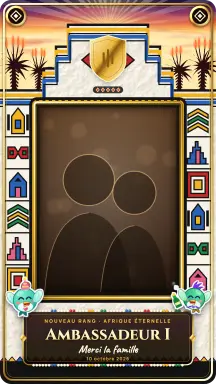
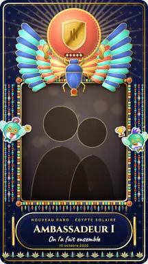
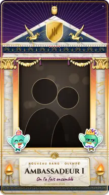
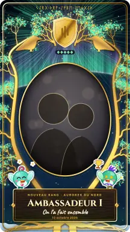
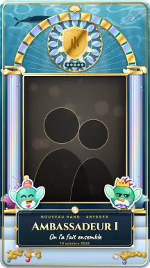
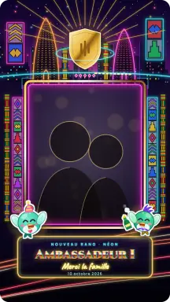
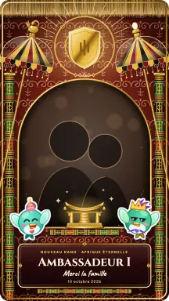
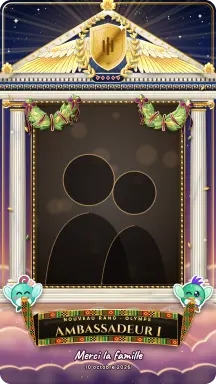
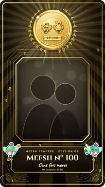

<title>Écrans des cadres de gloire</title>
<style>
/* Planche de validation : une section par écran, chaque écran rendu en clair, en sombre et à 320 px côte à côte ;
   l'appareil porte les jetons iOS (packages/design-tokens/ios.css, dérivé de MeeshyColors.swift), la planche ses propres neutres. */
:root {
  --bg: #f3f3f8; --fg: #1e1b4b; --muted: #55537a; --line: #dddcea; --panel: #ffffff; --tag: #e0e7ff; --tag-fg: #3730a3;
  --font-ui: -apple-system, BlinkMacSystemFont, "SF Pro Text", "Segoe UI", Roboto, system-ui, sans-serif;
  --font-round: ui-rounded, "SF Pro Rounded", -apple-system, system-ui, sans-serif;
  --font-mono: ui-monospace, "SF Mono", Menlo, monospace;
  color-scheme: light;
}
@media (prefers-color-scheme: dark) { :root:not([data-theme="light"]) { --bg: #0c0b12; --fg: #eef2ff; --muted: #a3a1c4; --line: #26243a; --panel: #15131f; --tag: #312e81; --tag-fg: #c7d2fe; color-scheme: dark } }
:root[data-theme="dark"] { --bg: #0c0b12; --fg: #eef2ff; --muted: #a3a1c4; --line: #26243a; --panel: #15131f; --tag: #312e81; --tag-fg: #c7d2fe; color-scheme: dark }
body { background: var(--bg); color: var(--fg); font-family: var(--font-ui); font-size: 15px; line-height: 1.5; margin: 0; }
.board { padding-inline: 16px; padding-block: 32px 64px; max-width: 1480px; margin: 0 auto; display: flex; flex-direction: column; gap: 56px; }
.intro { max-width: 70ch; display: flex; flex-direction: column; gap: 10px; }
.intro h1 { font-family: var(--font-round); font-size: 34px; line-height: 1.1; margin: 0; text-wrap: balance; }
.intro p { margin: 0; color: var(--muted); }
.intro code, .note code { font-family: var(--font-mono); font-size: 0.86em; }
.toc { display: flex; flex-wrap: wrap; gap: 6px; margin: 4px 0 0; padding: 0; list-style: none; }
.toc a { display: inline-block; padding: 4px 10px; border-radius: 999px; background: var(--tag); color: var(--tag-fg); text-decoration: none; font-size: 13px; font-weight: 600; }
.toc a:focus-visible, .toggle:focus-visible { outline: 2px solid #6366f1; outline-offset: 2px; }
.screen-section { display: flex; flex-direction: column; gap: 16px; scroll-margin-top: 16px; }
.screen-head { display: grid; grid-template-columns: minmax(0, 1fr) minmax(0, 1fr); gap: 8px 32px; align-items: start; }
@media (max-width: 860px) { .screen-head { grid-template-columns: minmax(0, 1fr); } }
.screen-head h2 { font-family: var(--font-round); font-size: 22px; margin: 0; text-wrap: balance; display: flex; gap: 10px; align-items: baseline; }
.screen-head h2 .id { font-family: var(--font-mono); font-size: 13px; padding: 2px 8px; border-radius: 6px; background: var(--tag); color: var(--tag-fg); }
.screen-head .lead { margin: 4px 0 0; color: var(--muted); max-width: 62ch; }
.note { font-size: 13.5px; color: var(--muted); margin: 0; padding: 0 0 0 16px; display: flex; flex-direction: column; gap: 4px; }
.note b { color: var(--fg); }
.stage { display: flex; gap: 28px; overflow-x: auto; padding: 4px 4px 12px; align-items: flex-start; }
.variant { display: flex; flex-direction: column; gap: 8px; flex: none; }
.variant > figcaption { font-family: var(--font-mono); font-size: 12px; color: var(--muted); }
figure { margin: 0; }
.toggle { font: inherit; font-size: 13px; padding: 6px 12px; border-radius: 999px; border: 1px solid var(--line); background: var(--panel); color: var(--fg); cursor: pointer; align-self: flex-start; }

/* ===== Appareil : jetons iOS ===== */
.t-light { --s-bg: #ffffff; --s-card: #f8f7ff; --s-ink: #1e1b4b; --s-ink2: color-mix(in srgb, #4338ca 80%, transparent); --s-ink3: color-mix(in srgb, #4338ca 55%, transparent); --s-fill: color-mix(in srgb, #000 5%, transparent); --s-edge: color-mix(in srgb, #000 7%, transparent); --s-glass: color-mix(in srgb, #fff 72%, transparent); --s-usage: #4f46e5; --s-chrome: #f2f2f7; color-scheme: light; }
.t-dark { --s-bg: #09090b; --s-card: #13111c; --s-ink: #eef2ff; --s-ink2: #a5b4fc; --s-ink3: color-mix(in srgb, #a5b4fc 70%, transparent); --s-fill: color-mix(in srgb, #fff 8%, transparent); --s-edge: color-mix(in srgb, #fff 8%, transparent); --s-glass: color-mix(in srgb, #1b1830 70%, transparent); --s-usage: #818cf8; --s-chrome: #000000; color-scheme: dark; }
.dev { --brand: linear-gradient(135deg, #6366f1, #4338ca); --ok: #34d399; --err: #f87171; --warn: #fbbf24; --indigo: #6366f1;
  width: 390px; min-height: 800px; border-radius: 46px; border: 10px solid #1c1b22; background: var(--s-bg); color: var(--s-ink); position: relative; overflow: hidden;
  font-family: var(--font-ui); font-size: 15px; line-height: 1.35; display: flex; flex-direction: column; box-shadow: 0 1px 0 var(--line); }
.dev.w320 { width: 320px; }
.dev.ipad { width: 1024px; min-height: 740px; border-radius: 28px; border-width: 14px; }
.dev.desk { width: 1280px; min-height: 780px; border-radius: 12px; border-width: 1px; border-color: var(--line); }
.status { height: 46px; flex: none; display: flex; justify-content: space-between; align-items: center; padding: 0 30px; font-size: 15px; font-weight: 600; font-family: var(--font-round); }
.status .isl { width: 110px; height: 30px; border-radius: 20px; background: #000; }
.status .bat { width: 26px; height: 12px; border-radius: 4px; border: 1.5px solid currentColor; opacity: .8; }
.ipad .status, .desk .status { display: none; }
.content { flex: 1; display: flex; flex-direction: column; gap: 14px; padding: 6px 16px 20px; min-height: 0; }
.dev.w320 .content { padding-inline: 12px; }
.nav { display: flex; align-items: center; gap: 10px; min-height: 44px; }
.nav h3 { flex: 1; margin: 0; font-family: var(--font-round); font-size: 17px; font-weight: 700; text-align: center; }
.nav .big { text-align: left; font-size: 28px; }
.circle { width: 36px; height: 36px; border-radius: 50%; background: var(--s-glass); backdrop-filter: blur(14px); border: 0.5px solid var(--s-edge); display: grid; place-items: center; flex: none; color: var(--s-ink); }
.circle svg { width: 16px; height: 16px; }
.ico { width: 14px; height: 14px; flex: none; }
.kicker { font-size: 12px; font-weight: 700; letter-spacing: .06em; text-transform: uppercase; color: var(--s-ink2); }
.title { font-family: var(--font-round); font-size: 22px; font-weight: 800; margin: 0; line-height: 1.15; text-wrap: balance; }
.sub { font-size: 13px; color: var(--s-ink2); margin: 0; }
.cap { font-size: 12px; color: var(--s-ink3); margin: 0; }
.card { background: var(--s-card); border: 0.5px solid var(--s-edge); border-radius: 16px; padding: 12px; display: flex; flex-direction: column; gap: 10px; }
.group-title { font-size: 13px; font-weight: 600; color: var(--s-ink2); text-transform: uppercase; letter-spacing: .04em; margin: 6px 4px -6px; }
.btn { font: 600 15px var(--font-round); min-height: 50px; border-radius: 999px; border: 0; display: flex; align-items: center; justify-content: center; gap: 8px; padding: 0 20px; color: #fff; background: var(--brand); }
.btn.sec { background: var(--s-fill); color: var(--s-ink); }
.btn.sm { min-height: 32px; font-size: 13px; padding: 0 14px; }
.btn.ghost { background: transparent; color: var(--s-ink2); min-height: 44px; }
.link { font-size: 13px; color: var(--s-ink2); text-decoration: underline; text-underline-offset: 3px; text-align: center; }
.usage { display: inline-flex; align-items: center; gap: 4px; font-size: 12px; font-weight: 600; color: var(--s-usage); }
.usage svg { width: 13px; height: 13px; }
.usage.on-media { color: #fff; background: rgba(0,0,0,.45); padding: 3px 8px; border-radius: 999px; backdrop-filter: blur(8px); }
.pill { display: inline-flex; align-items: center; gap: 4px; font-size: 11px; font-weight: 700; padding: 2px 8px; border-radius: 999px; background: var(--s-fill); color: var(--s-ink2); }
.pill.err { background: color-mix(in srgb, var(--err) 18%, transparent); color: var(--err); }
.pill.warn { background: color-mix(in srgb, var(--warn) 22%, transparent); color: #b45309; }
.t-dark .pill.warn { color: var(--warn); }
.pill.ok { background: color-mix(in srgb, var(--ok) 20%, transparent); color: #047857; }
.t-dark .pill.ok { color: var(--ok); }
.thumb { aspect-ratio: 9 / 16; border-radius: 12px; overflow: hidden; background: var(--s-fill); position: relative; max-width: 100%; }
.thumb img { width: 100%; height: 100%; object-fit: cover; display: block; }
.thumb.dim img { filter: saturate(.35) brightness(.7); }

/* Rangées de pack (PackRow) */
.prow { display: grid; grid-template-columns: 56px minmax(0, 1fr) auto; gap: 12px; align-items: center; padding: 12px; border-radius: 16px; background: var(--s-card); border: 0.5px solid var(--s-edge); }
.prow .cover { width: 56px; height: 56px; border-radius: 12px; overflow: hidden; background: var(--s-fill); }
.prow .cover img { width: 100%; height: 100%; object-fit: cover; object-position: center 30%; }
.prow .txt { display: flex; flex-direction: column; gap: 2px; min-width: 0; }
.prow .name { font: 600 15px var(--font-round); }
.prow .desc { font-size: 12px; color: var(--s-ink2); display: -webkit-box; -webkit-line-clamp: 2; -webkit-box-orient: vertical; overflow: hidden; }
.prow .meta { display: flex; flex-wrap: wrap; gap: 6px; align-items: center; margin-top: 2px; }
.prow .act { display: flex; flex-direction: column; align-items: flex-end; gap: 6px; }
.bar { height: 4px; border-radius: 4px; background: var(--s-fill); overflow: hidden; grid-column: 2 / 4; }
.bar i { display: block; height: 100%; background: var(--brand); border-radius: 4px; }
.prow .pill { white-space: nowrap; }
.prow.long { grid-template-columns: 56px minmax(0, 1fr); }
.prow.long .act { grid-column: 2; flex-direction: row; align-items: center; justify-content: flex-start; }
.prow.long .bar, .prow.long .unfold { grid-column: 1 / 3; }
.dev.w320 .btn { padding: 0 12px; }
.dev.w320 .prow .pill { white-space: normal; }
.dev.w320 .prow { grid-template-columns: 44px minmax(0, 1fr); }
.dev.w320 .prow .cover { width: 44px; height: 44px; }
.dev.w320 .prow .act { grid-column: 2; flex-direction: row; align-items: center; justify-content: flex-start; }
.dev.w320 .bar { grid-column: 1 / 3; }
.unfold { grid-column: 1 / 4; display: grid; grid-template-columns: repeat(3, minmax(0, 1fr)); gap: 10px; padding-top: 4px; }
.dev.w320 .unfold { grid-column: 1 / 3; grid-template-columns: repeat(2, minmax(0, 1fr)); }
.tile { display: flex; flex-direction: column; gap: 4px; min-width: 0; }
.tile .nm { font: 600 13px var(--font-round); white-space: nowrap; overflow: hidden; text-overflow: ellipsis; }
.tile.sel .thumb { outline: 3px solid var(--indigo); outline-offset: 2px; }
.tile .usage { font-size: 11px; line-height: 1.25; }

/* Segments */
.seg { display: flex; padding: 3px; border-radius: 999px; background: var(--s-fill); gap: 2px; }
.seg span { flex: 1; text-align: center; font: 600 13px var(--font-round); line-height: 1.2; padding: 7px 6px; border-radius: 999px; color: var(--s-ink2); display: flex; align-items: center; justify-content: center; }
.seg span.on { background: var(--s-bg); color: var(--s-ink); box-shadow: 0 1px 3px rgba(0,0,0,.12); }
.dev.w320 .seg span { font-size: 11.5px; padding: 7px 3px; white-space: normal; line-height: 1.15; }
.tabs { display: flex; gap: 8px; overflow: hidden; }
.tabs span { font: 600 13px var(--font-round); padding: 8px 14px; border-radius: 999px; background: var(--s-fill); white-space: nowrap; display: inline-flex; gap: 6px; align-items: center; }
.tabs span.on { background: var(--brand); color: #fff; }

/* Listes réglages */
.list { background: var(--s-card); border-radius: 14px; border: 0.5px solid var(--s-edge); overflow: hidden; }
.li { display: flex; align-items: center; gap: 12px; padding: 12px 14px; min-height: 44px; border-top: 0.5px solid var(--s-edge); }
.li:first-child { border-top: 0; }
.li .grow { flex: 1; min-width: 0; display: flex; flex-direction: column; gap: 2px; }
.li .val { color: var(--s-ink2); font-size: 14px; }
.radio { width: 22px; height: 22px; border-radius: 50%; border: 2px solid var(--s-ink3); flex: none; display: grid; place-items: center; }
.radio.on { border-color: var(--indigo); }
.radio.on::after { content: ""; width: 12px; height: 12px; border-radius: 50%; background: var(--indigo); }
.switch { width: 51px; height: 31px; border-radius: 999px; background: var(--s-fill); position: relative; flex: none; }
.switch::after { content: ""; position: absolute; top: 2px; left: 2px; width: 27px; height: 27px; border-radius: 50%; background: #fff; box-shadow: 0 2px 4px rgba(0,0,0,.2); }
.switch.on { background: var(--ok); }
.switch.on::after { left: 22px; }
.chev { color: var(--s-ink3); }

/* Caméra / déroulé */
.cam { background: #000; color: #fff; }
.cam .content { padding-top: 0; }
.viewer { position: relative; border-radius: 22px; overflow: hidden; aspect-ratio: 9 / 16; width: 100%; max-height: 470px; margin: 0 auto; background: #111; }
.viewer > img { width: 100%; height: 100%; object-fit: cover; }
.viewer .over { position: absolute; inset: 0; display: flex; flex-direction: column; justify-content: space-between; padding: 10px; pointer-events: none; }
.viewer .guide { position: absolute; left: 22%; right: 22%; top: 24%; height: 34%; border: 2px dashed rgba(255,255,255,.85); border-radius: 50% 50% 46% 46%; }
.viewer .meo-zone { position: absolute; right: 6%; bottom: 16%; width: 32%; height: 26%; border-radius: 16px; background: repeating-linear-gradient(45deg, rgba(251,191,36,.28) 0 6px, transparent 6px 12px); border: 1.5px solid rgba(251,191,36,.9); }
.carousel { display: flex; gap: 10px; overflow: hidden; padding: 2px; }
.ctile { flex: none; width: 64px; display: flex; flex-direction: column; align-items: center; gap: 4px; }
.ctile .thumb { width: 64px; border-radius: 10px; }
.ctile.sel .thumb { outline: 3px solid #fff; outline-offset: 2px; }
.ctile .lbl { font-size: 10.5px; color: rgba(255,255,255,.8); text-align: center; line-height: 1.15; }
.badge-c { position: absolute; inset: auto 4px 4px 4px; display: flex; justify-content: center; }
.badge-c .pill { background: rgba(0,0,0,.6); color: #fff; font-size: 10px; padding: 2px 6px; }
.ring { position: absolute; inset: 0; display: grid; place-items: center; background: rgba(0,0,0,.35); }
.ring svg { width: 34px; height: 34px; }
.poses { display: flex; gap: 8px; overflow: hidden; }
.poses span { flex: none; font: 600 13px var(--font-round); padding: 8px 12px; border-radius: 999px; background: rgba(255,255,255,.14); color: #fff; }
.poses span.on { background: #fff; color: #1e1b4b; }
.cam .circle { background: rgba(255,255,255,.14); color: #fff; border-color: rgba(255,255,255,.18); }
.cam .link { color: rgba(255,255,255,.85); }

/* La bande du composer iOS (ComposerLookStrip, ComposerCaptureBottomRow) : la case choisie EST le déclencheur.
   Cases 56 × 100, pas de 8, rayon MeeshyRadius.sm ; la choisie au centre, contour blanc de 3 ; rien d'écrit dans les cases,
   seul le nom du choix s'écrit sous la bande. Le rond n'existe que sans cadre (collapsedTrigger = .shutter). */
.band-zone { display: flex; flex-direction: column; align-items: stretch; gap: 0; position: relative; }
.band { display: flex; gap: 8px; justify-content: center; overflow: hidden; height: 100px; }
.cell { flex: none; width: 56px; height: 100px; border-radius: 10px; overflow: hidden; position: relative; background: rgba(255,255,255,.12); box-shadow: inset 0 0 0 1px rgba(255,255,255,.25); }
.cell img { width: 100%; height: 100%; object-fit: cover; display: block; }
.cell.dim img { filter: saturate(.35) brightness(.7); }
.cell.on { box-shadow: inset 0 0 0 3px #fff; }
.cell.on img { position: absolute; inset: 3px; width: calc(100% - 6px); height: calc(100% - 6px); border-radius: 7px; }
.cell .glyph { position: absolute; inset: 0; display: grid; place-items: center; color: rgba(255,255,255,.7); }
.cell .glyph svg { width: 20px; height: 20px; }
.cell .ring { background: rgba(0,0,0,.35); }
.cell .ring svg { width: 26px; height: 26px; }
.cell .badge-c { inset: auto 3px 4px 3px; }
.cell .badge-c .pill { font-size: 9.5px; padding: 1px 5px; }
.cell .rec { position: absolute; top: 4px; left: 50%; transform: translateX(-50%); display: inline-flex; align-items: center; gap: 3px; padding: 0 6px; border-radius: 999px; background: rgba(0,0,0,.45); font: 700 11px var(--font-mono); color: #fff; white-space: nowrap; }
.rec i, .chrono i { width: 7px; height: 7px; border-radius: 50%; background: #f87171; display: inline-block; }
.band-name { height: 30px; display: flex; align-items: flex-end; justify-content: center; font: 700 20px var(--font-round); color: #fff; text-shadow: 0 1px 3px rgba(0,0,0,.6); white-space: nowrap; overflow: hidden; }
.band-name.quiet { visibility: hidden; }
.lock-track { position: absolute; right: 14px; top: 34px; display: flex; align-items: center; gap: 6px; padding: 6px 10px; border-radius: 999px; background: rgba(255,255,255,.14); color: #fff; font-size: 12px; }
.lock-track svg { width: 15px; height: 15px; }
.chrono { display: inline-flex; align-items: center; gap: 6px; padding: 6px 12px; border-radius: 999px; background: rgba(0,0,0,.45); font: 700 13px var(--font-mono); color: #fff; }
.rail { position: absolute; left: 8px; bottom: 10px; display: flex; flex-direction: column; gap: 8px; pointer-events: none; }
.rail.row { position: static; flex-direction: row; justify-content: center; gap: 28px; }
.rail span { min-width: 44px; min-height: 44px; display: flex; flex-direction: column; align-items: center; justify-content: center; gap: 2px; font: 600 11px var(--font-ui); color: #fff; text-shadow: 0 1px 3px rgba(0,0,0,.6); }
.rail span svg { width: 19px; height: 19px; filter: drop-shadow(0 1px 2px rgba(0,0,0,.6)); }
.rail span.on { color: #ffcc00; }
.trigger-ring { width: 72px; height: 72px; border-radius: 50%; box-shadow: inset 0 0 0 4px #fff; display: grid; place-items: center; margin: 14px auto; }
.trigger-ring::after { content: ""; width: 58px; height: 58px; border-radius: 50%; background: #fff; }
.hint { text-align: center; font: 12.5px var(--font-mono); color: rgba(255,255,255,.85); margin: 0; }
.cam-top { display: flex; align-items: center; gap: 8px; min-height: 44px; }
.cam-top .spacer { flex: 1; }
.done { font: 600 15px var(--font-round); padding: 8px 16px; border-radius: 999px; background: #fff; color: #1e1b4b; }
.toast { position: absolute; left: 50%; top: 104px; transform: translateX(-50%); display: inline-flex; align-items: center; gap: 6px; padding: 8px 14px; border-radius: 999px; background: var(--s-glass); backdrop-filter: blur(20px); border: 0.5px solid var(--s-edge); color: var(--s-ink); font: 600 13px var(--font-round); white-space: nowrap; box-shadow: 0 6px 20px rgba(0,0,0,.25); z-index: 2; }
.toast svg { width: 15px; height: 15px; color: #34d399; }
.saved-mark { display: inline-flex; align-items: center; gap: 4px; font-size: 12px; color: var(--s-ink3); justify-content: center; }
.saved-mark svg { width: 13px; height: 13px; }
.cam .saved-mark { color: rgba(255,255,255,.7); }
.dev:not(.cam) .cell { box-shadow: inset 0 0 0 1px var(--s-edge); }
.dev:not(.cam) .cell.on { box-shadow: inset 0 0 0 3px var(--s-ink); }
.dev:not(.cam) .band-name { color: var(--s-ink); text-shadow: none; font-size: 17px; height: 26px; }
.ann { font: 600 11px var(--font-mono); color: #fbbf24; text-align: center; margin: 0; }
.t-light .ann { color: #b45309; }
.cam .ann { color: #fbbf24; }

/* Feuille modale / bannière */
.dim-under { position: absolute; inset: 0; background: rgba(0,0,0,.42); }
.sheet { position: absolute; left: 0; right: 0; bottom: 0; background: var(--s-bg); border-radius: 28px 28px 0 0; padding: 10px 18px 28px; display: flex; flex-direction: column; gap: 12px; box-shadow: 0 -10px 30px rgba(0,0,0,.25); }
.grab { width: 38px; height: 5px; border-radius: 3px; background: var(--s-ink3); margin: 0 auto 4px; opacity: .6; }
.banner { position: absolute; left: 10px; right: 10px; top: 52px; border-radius: 22px; background: var(--s-glass); backdrop-filter: blur(20px); border: 0.5px solid var(--s-edge); box-shadow: 0 8px 28px rgba(0,0,0,.18); padding: 10px 12px; display: flex; gap: 10px; align-items: center; }
.banner .mini { width: 38px; aspect-ratio: 9/16; border-radius: 6px; overflow: hidden; flex: none; }
.banner .mini img { width: 100%; height: 100%; object-fit: cover; }
.fake-row { display: flex; gap: 12px; align-items: center; padding: 8px 0; }
.fake-row .av { width: 52px; height: 52px; border-radius: 50%; background: var(--s-fill); flex: none; }
.fake-row .ln { flex: 1; display: flex; flex-direction: column; gap: 6px; }
.fake-row .ln i { display: block; height: 10px; border-radius: 5px; background: var(--s-fill); }
.mee { width: 120px; margin: 0 auto; display: block; }

/* Carnet */
.nb-grid { display: grid; grid-template-columns: repeat(3, minmax(0, 1fr)); gap: 10px; }
.nb-entry { display: flex; flex-direction: column; gap: 4px; min-width: 0; }
.nb-entry .t { font: 600 12px var(--font-round); white-space: nowrap; overflow: hidden; text-overflow: ellipsis; }
.alert { border-radius: 14px; padding: 12px; display: flex; gap: 10px; align-items: flex-start; background: color-mix(in srgb, var(--err) 14%, transparent); border: 0.5px solid color-mix(in srgb, var(--err) 40%, transparent); }
.alert svg { color: var(--err); width: 18px; height: 18px; flex: none; margin-top: 1px; }
.info { border-radius: 14px; padding: 10px 12px; display: flex; gap: 10px; align-items: center; background: var(--s-fill); font-size: 13px; color: var(--s-ink2); }
.info svg { width: 16px; height: 16px; flex: none; }
.dot { width: 8px; height: 8px; border-radius: 50%; background: var(--indigo); display: inline-block; }

/* Écran verrouillé */
.lock { background: radial-gradient(120% 80% at 30% 10%, #4338ca 0%, #1e1b4b 45%, #09090b 100%); color: #fff; }
.lock .clock { text-align: center; font: 300 82px var(--font-round); line-height: 1; margin-top: 24px; }
.lock .date { text-align: center; font-weight: 600; font-size: 18px; opacity: .9; }
.notif { border-radius: 22px; padding: 12px 14px; display: flex; gap: 12px; background: rgba(255,255,255,.22); backdrop-filter: blur(20px); color: #fff; }
.t-light.lock .notif { background: rgba(255,255,255,.62); color: #1e1b4b; }
.t-light.lock { background: radial-gradient(120% 80% at 30% 10%, #c7d2fe 0%, #a5b4fc 45%, #818cf8 100%); color: #1e1b4b; }
.app-ic { width: 38px; height: 38px; border-radius: 9px; background: var(--brand); flex: none; display: grid; place-items: center; color: #fff; font: 800 18px var(--font-round); }
.notif .h { display: flex; justify-content: space-between; font-size: 14px; font-weight: 600; }
.notif .h span:last-child { opacity: .7; font-weight: 400; font-size: 13px; }

/* Grilles larges */
.split { display: grid; grid-template-columns: minmax(0, 1fr) 400px; gap: 20px; flex: 1; padding: 20px; }
.desk-shell { display: grid; grid-template-columns: 240px minmax(0, 1fr); flex: 1; }
.desk-side { border-right: 0.5px solid var(--s-edge); padding: 20px 12px; display: flex; flex-direction: column; gap: 4px; background: var(--s-card); }
.desk-side span { padding: 9px 12px; border-radius: 10px; font-size: 14px; color: var(--s-ink2); }
.desk-side span.on { background: var(--s-fill); color: var(--s-ink); font-weight: 600; }
.desk-main { padding: 28px 40px; display: flex; flex-direction: column; gap: 16px; position: relative; }
.dialog { position: absolute; top: 40px; right: 40px; width: 520px; background: var(--s-bg); border-radius: 22px; border: 0.5px solid var(--s-edge); box-shadow: 0 24px 60px rgba(0,0,0,.28); padding: 18px; display: flex; flex-direction: column; gap: 12px; }
.row { display: flex; gap: 8px; align-items: center; }
.row.wrap { flex-wrap: wrap; }
.spacer { flex: 1; }
.tnum { font-variant-numeric: tabular-nums; }
.stack { display: flex; flex-direction: column; gap: 8px; }
.fmt { display: flex; gap: 8px; }
.field { border-radius: 14px; background: var(--s-fill); padding: 12px 14px; display: flex; align-items: center; gap: 8px; font-family: "Caveat", "Bradley Hand", cursive; font-size: 20px; }
.field .cnt { margin-left: auto; font: 500 12px var(--font-ui); color: var(--s-ink3); }
.atm-grid { display: grid; grid-template-columns: repeat(2, minmax(0, 1fr)); gap: 10px; }
.atm { border-radius: 16px; border: 0.5px solid var(--s-edge); background: var(--s-card); padding: 8px; display: flex; gap: 8px; align-items: flex-start; position: relative; }
.atm .thumb { width: 54px; flex: none; border-radius: 8px; }
.atm .tx { display: flex; flex-direction: column; gap: 3px; min-width: 0; flex: 1; }
.atm .nm { font: 700 13.5px var(--font-round); }
.atm .st { font-size: 11px; color: var(--s-ink2); line-height: 1.25; }
.atm.on { border: 2px solid var(--indigo); padding: 6.5px; }
.atm .radio { position: absolute; top: 8px; right: 8px; width: 18px; height: 18px; }
.atm .radio.on::after { width: 9px; height: 9px; }
.dev.w320 .atm-grid { grid-template-columns: minmax(0, 1fr); }
@media (prefers-reduced-motion: no-preference) { .bar i { transition: width .3s; } }
</style>

<svg width="0" height="0" style="position:absolute" aria-hidden="true">
  <symbol id="i-seal" viewBox="0 0 24 24"><path fill="currentColor" d="M12 1.8l2.4 1.8 3 .1.9 2.8 2.4 1.8-.9 2.8.9 2.8-2.4 1.8-.9 2.8-3 .1L12 20.4l-2.4-1.8-3-.1-.9-2.8-2.4-1.8.9-2.8-.9-2.8 2.4-1.8.9-2.8 3-.1z"/><path d="M8 11.2l2.7 2.7L16.2 8.4" stroke="#fff" stroke-width="2" fill="none" stroke-linecap="round" stroke-linejoin="round"/></symbol>
  <symbol id="i-back" viewBox="0 0 24 24"><path d="M15 5l-7 7 7 7" stroke="currentColor" stroke-width="2.4" fill="none" stroke-linecap="round" stroke-linejoin="round"/></symbol>
  <symbol id="i-x" viewBox="0 0 24 24"><path d="M6 6l12 12M18 6L6 18" stroke="currentColor" stroke-width="2.4" stroke-linecap="round"/></symbol>
  <symbol id="i-down" viewBox="0 0 24 24"><path d="M12 4v11m0 0l-4.5-4.5M12 15l4.5-4.5M5 20h14" stroke="currentColor" stroke-width="2.2" fill="none" stroke-linecap="round" stroke-linejoin="round"/></symbol>
  <symbol id="i-retry" viewBox="0 0 24 24"><path d="M20 11a8 8 0 10-2.3 5.7M20 4v7h-7" stroke="currentColor" stroke-width="2.2" fill="none" stroke-linecap="round" stroke-linejoin="round"/></symbol>
  <symbol id="i-warn" viewBox="0 0 24 24"><path fill="currentColor" d="M12 2.5l10.5 18.5H1.5zM11 9v6h2V9zm0 7.5v2h2v-2z"/></symbol>
  <symbol id="i-phone" viewBox="0 0 24 24"><rect x="6.5" y="2.5" width="11" height="19" rx="2.5" stroke="currentColor" stroke-width="2" fill="none"/><path d="M10.5 18.5h3" stroke="currentColor" stroke-width="2" stroke-linecap="round"/></symbol>
  <symbol id="i-flip" viewBox="0 0 24 24"><path d="M4 8h3l2-2.5h6L17 8h3v11H4zM9 13.5a3 3 0 015.5-1.6M15 13.5a3 3 0 01-5.5 1.6" stroke="currentColor" stroke-width="1.9" fill="none" stroke-linejoin="round"/></symbol>
  <symbol id="i-photo" viewBox="0 0 24 24"><rect x="3" y="4.5" width="18" height="15" rx="3" stroke="currentColor" stroke-width="2" fill="none"/><path d="M3.5 16l5-5 4 4 3-3 5 5" stroke="currentColor" stroke-width="2" fill="none" stroke-linejoin="round"/></symbol>
  <symbol id="i-bag" viewBox="0 0 24 24"><path fill="currentColor" d="M6 7h12l1.2 13.5H4.8zM9 7a3 3 0 016 0h-1.8a1.2 1.2 0 00-2.4 0z"/></symbol>
  <symbol id="i-plus" viewBox="0 0 24 24"><path d="M12 5v14M5 12h14" stroke="currentColor" stroke-width="2.4" stroke-linecap="round"/></symbol>
  <symbol id="i-up-app" viewBox="0 0 24 24"><rect x="3.5" y="3.5" width="17" height="17" rx="4.5" stroke="currentColor" stroke-width="2" fill="none"/><path d="M12 16V8m0 0l-3.5 3.5M12 8l3.5 3.5" stroke="currentColor" stroke-width="2" fill="none" stroke-linecap="round" stroke-linejoin="round"/></symbol>
  <symbol id="i-chev" viewBox="0 0 24 24"><path d="M9 5l7 7-7 7" stroke="currentColor" stroke-width="2.2" fill="none" stroke-linecap="round" stroke-linejoin="round"/></symbol>
  <symbol id="i-flame" viewBox="0 0 24 24"><path fill="currentColor" d="M12 2c1 4 5 5.5 5 11a5 5 0 01-10 0c0-2.4 1.2-3.7 2.2-4.8.2 1.6.9 2.6 1.8 3C11 8 11.2 4.6 12 2z"/></symbol>
  <symbol id="i-frame" viewBox="0 0 24 24"><rect x="3.5" y="3.5" width="17" height="17" rx="2" stroke="currentColor" stroke-width="2" fill="none"/><rect x="7.5" y="7.5" width="9" height="9" rx="1" stroke="currentColor" stroke-width="1.6" fill="none"/></symbol>
  <symbol id="i-filters" viewBox="0 0 24 24"><circle cx="9" cy="10" r="5.5" stroke="currentColor" stroke-width="1.8" fill="none"/><circle cx="15" cy="10" r="5.5" stroke="currentColor" stroke-width="1.8" fill="none"/><circle cx="12" cy="15" r="5.5" stroke="currentColor" stroke-width="1.8" fill="none"/></symbol>
  <symbol id="i-crop" viewBox="0 0 24 24"><path d="M7 2.5V17h14.5M2.5 7H17v14.5" stroke="currentColor" stroke-width="2" fill="none" stroke-linecap="round" stroke-linejoin="round"/></symbol>
  <symbol id="i-lock" viewBox="0 0 24 24"><rect x="5" y="10.5" width="14" height="10" rx="2.5" fill="currentColor"/><path d="M8 10.5V8a4 4 0 018 0v2.5" stroke="currentColor" stroke-width="2" fill="none"/></symbol>
  <symbol id="i-check" viewBox="0 0 24 24"><circle cx="12" cy="12" r="10" fill="currentColor"/><path d="M7.5 12.2l3 3 6-6.4" stroke="#fff" stroke-width="2.2" fill="none" stroke-linecap="round" stroke-linejoin="round"/></symbol>
  <symbol id="i-size" viewBox="0 0 24 24"><path d="M4 9V4h5M20 9V4h-5M4 15v5h5M20 15v5h-5" stroke="currentColor" stroke-width="2.2" fill="none" stroke-linecap="round" stroke-linejoin="round"/></symbol>
  <symbol id="i-bolt" viewBox="0 0 24 24"><path fill="currentColor" d="M13.5 2L5 13.5h6L10 22l9-12h-6z"/></symbol>
  <symbol id="i-none" viewBox="0 0 24 24"><circle cx="12" cy="12" r="8.5" stroke="currentColor" stroke-width="2" fill="none"/><path d="M6 18L18 6" stroke="currentColor" stroke-width="2"/></symbol>
  <symbol id="i-app" viewBox="0 0 24 24"><rect x="4" y="3" width="16" height="18" rx="4" stroke="currentColor" stroke-width="2" fill="none"/><path d="M8.5 9h7M8.5 13h4.5" stroke="currentColor" stroke-width="2" stroke-linecap="round"/></symbol>
  <symbol id="i-link" viewBox="0 0 24 24"><path d="M10 14a4 4 0 005.7 0l3-3a4 4 0 00-5.7-5.7l-1 1M14 10a4 4 0 00-5.7 0l-3 3a4 4 0 005.7 5.7l1-1" stroke="currentColor" stroke-width="2" fill="none" stroke-linecap="round"/></symbol>
</svg>

<main class="board">
  <header class="intro">
    <h1>Cadres de gloire · les écrans neufs</h1>
    <p>Brouillon de design du lot L0b (<code>#10147</code>), daté du 12 octobre 2026. Chaque écran se valide séparément par son numéro (E1 à E17). Tous sont dérivés de l'interface iOS livrée : jetons <code>MeeshyColors</code>, boutons en verre, Boutique des packs (<code>PackShopView</code>, <code>FramePackShelfView</code>, <code>pack-shop.tsx</code> sur le web).</p>
    <p>Chaque vignette de cadre affiche son <b>libellé d'usage</b>, tiré de la loi <code>describeFrameUsage</code> et des textes déjà traduits (« Rang Ambassadeur I uniquement », « Capture photo et vidéo uniquement »…). Les poids des packs sont des estimations de la spec (§ 5.10.5), que le lot L3 mesurera. Les mots entre guillemets sont proposés et restent à valider ; les noms de cadres (« Baobab d'or », « Temple de l'Aube »…) sont provisoires, le lot L16 les fixera. Une étape sans cadre livré (les mythologies de Murmure à Polyglotte, lot L15) montre la carte actuelle.</p>
    <p><b>Révisé le 12 octobre 2026 sur le retour du porteur (#10284)</b> : il n'y a plus de rond d'enregistrement à côté des cadres. Comme dans la caméra du composer iOS, la case du cadre choisi EST le déclencheur (E2, E3, E14, E16). Une prise par la case de cadre rejoint Photos puis la retouche (E18) ; une prise hors du cadre va en retouche et reste dans Meeshy (E19) ; « Enregistrer » est masqué tant que la prise est dans Photos avec le cadre affiché, et revient quand on en change (E20). Le rond ne subsiste que sans aucun cadre choisi (E14, variante 2).</p>
    <p>Chaque écran est montré en clair, en sombre et, quand la largeur change la disposition, à 320 px. L'iPad (E16) et le web de bureau (E17) ont leur propre composition.</p>
    <nav aria-label="Écrans"><ul class="toc" id="toc"></ul></nav>
  </header>

  <!-- E1 -->
  <section class="screen-section" id="e1" data-name="Choix d'atmosphère">
    <div class="screen-head">
      <div><h2><span class="id">E1</span> Choix d'atmosphère, à Ambassadeur</h2>
      <p class="lead">Premier passage à Ambassadeur. Les sept atmosphères, l'Afrique éternelle en tête. Chacune montre la vignette de son cadre d'Ambassadeur pour la division en cours, son nom, une courte histoire et son état sur l'appareil. Choisir installe le pack : rien à comprendre de plus.</p></div>
      <div class="note"><b>À valider</b><span>Égypte vient d'être choisie : la tuile montre la progression des couches du seul cadre de l'étape en cours (380 Ko), le reste du pack suivra en Wi-Fi.</span><span>« Choisir plus tard » prend l'Afrique éternelle sans rien enregistrer. L'écran revient une seule fois, puis ne vit plus que dans les réglages.</span><span>Recommandation de la spec (D7, D21), réversible.</span></div>
    </div>
    <div class="stage" data-variants="light dark 320"><template>
      <div class="content">
        <div class="nav"><span class="circle"><svg><use href="#i-x"/></svg></span><h3>Ton atmosphère</h3><span style="width:36px"></span></div>
        <div class="stack"><span class="kicker">Nouveau rang · Ambassadeur I</span><p class="title">Choisis le monde de tes cadres</p><p class="sub">Tes prochaines photos de rang seront décorées dans cette atmosphère. Tu pourras en changer dans les réglages du jeu.</p></div>
        <div class="atm-grid">
          <div class="atm"><div class="thumb"></div><div class="tx"><span class="nm">Afrique éternelle</span><span class="st">Savane et Royaumes, les deux collections du continent</span><span class="pill ok">Incluse</span></div><span class="radio"></span></div>
          <div class="atm on"><div class="thumb"><div class="ring"><svg viewBox="0 0 36 36"><circle cx="18" cy="18" r="14" stroke="rgba(255,255,255,.35)" stroke-width="4" fill="none"/><circle cx="18" cy="18" r="14" stroke="#fff" stroke-width="4" fill="none" stroke-dasharray="88" stroke-dashoffset="35" transform="rotate(-90 18 18)" stroke-linecap="round"/></svg></div></div><div class="tx"><span class="nm">Égypte solaire</span><span class="st">Le Nil, les obélisques et l'or du soleil</span><span class="pill tnum">230 / 380 Ko</span></div><span class="radio on"></span></div>
          <div class="atm"><div class="thumb"></div><div class="tx"><span class="nm">Olympe</span><span class="st">Marbre, lauriers et dieux grecs</span><span class="pill tnum"><svg class="ico"><use href="#i-down"/></svg>2,4 Mo</span></div><span class="radio"></span></div>
          <div class="atm"><div class="thumb"></div><div class="tx"><span class="nm">Empire céleste</span><span class="st">Dragons, jade et nuages de soie</span><span class="pill tnum"><svg class="ico"><use href="#i-down"/></svg>2,1 Mo</span></div><span class="radio"></span></div>
          <div class="atm"><div class="thumb"></div><div class="tx"><span class="nm">Aurores du Nord</span><span class="st">Runes, glace et ciels verts</span><span class="pill tnum"><svg class="ico"><use href="#i-down"/></svg>2,8 Mo</span></div><span class="radio"></span></div>
          <div class="atm"><div class="thumb"></div><div class="tx"><span class="nm">Abysses</span><span class="st">Les lumières du fond des mers</span><span class="pill tnum"><svg class="ico"><use href="#i-down"/></svg>2,2 Mo</span></div><span class="radio"></span></div>
          <div class="atm"><div class="thumb"></div><div class="tx"><span class="nm">Néon</span><span class="st">La ville la nuit, en lumière vive</span><span class="pill tnum"><svg class="ico"><use href="#i-down"/></svg>1,9 Mo</span></div><span class="radio"></span></div>
        </div>
        <span class="usage"><svg><use href="#i-seal"/></svg>Chaque vignette : Rang Ambassadeur I uniquement</span>
        <div class="stack" style="margin-top:auto"><button class="btn">Continuer avec Égypte solaire</button><button class="btn ghost">Choisir plus tard</button></div>
      </div>
    </template></div>
  </section>

  <!-- E2 -->
  <section class="screen-section" id="e2" data-name="Caméra : la case de cadre déclenche">
    <div class="screen-head">
      <div><h2><span class="id">E2</span> Déroulé photo : la bande des cadres, dont la case choisie déclenche</h2>
      <p class="lead">La caméra du composer iOS, reprise telle quelle (<code>ComposerLookStrip</code>, <code>ComposerCaptureBottomRow</code>) : la bande des décors de l'atmosphère, la case choisie au centre, encadrée de blanc, et son nom écrit seul sous la bande. <b>La case choisie EST le déclencheur</b> : la toucher prend la photo, la tenir filme. Il n'y a pas de rond en plus. Les poses de Mee et Meo restent au-dessus de la bande.</p></div>
      <div class="note"><b>À valider</b><span>Une prise par la case de cadre rejoint Photos, puis la retouche (E18). Une prise par la scène (toucher deux fois l'aperçu, ou le tenir) va en retouche et reste dans Meeshy seulement (E19).</span><span>Les cases n'écrivent rien : la présence de chaque décor se lit sur sa case (prête, poids, anneau de téléchargement, « Réessayer », « Plein »). Glisser la bande choisit la case du centre ; une case absente passe en tête de file, la carte simple tient l'aperçu en attendant.</span><span>Le « + » en bout de bande ouvre « Autres atmosphères » (E12). Le rail « Filtres · Cadres » est celui du composer. L'import depuis la galerie prend la place du flash en haut ; « Carte seule » reste dans la feuille « On immortalise ? ».</span><span>Repliée (rail refermé), la miniature choisie reste seule et déclenche toujours. En enregistrement, seule elle reste, avec son point rouge et son chrono, et le cadenas à droite.</span><span>La caméra est noire dans les deux thèmes, comme celle du composer.</span></div>
    </div>
    <div class="stage" data-variants="dark 320" data-force="cam"><template data-label="bande ouverte">
      <div class="content">
        <div class="cam-top"><span class="circle"><svg><use href="#i-x"/></svg></span><span class="spacer"></span><span class="circle"><svg><use href="#i-photo"/></svg></span><span class="circle"><svg><use href="#i-flip"/></svg></span></div>
        <div class="viewer"><div class="over"><span class="usage on-media" style="align-self:flex-start"><svg><use href="#i-seal"/></svg>Rang Ambassadeur I uniquement</span></div><div class="rail"><span><svg><use href="#i-filters"/></svg>Filtres</span><span class="on"><svg><use href="#i-frame"/></svg>Cadres</span></div></div>
        <div class="poses"><span class="on">Au pied</span><span>Perchés</span><span>Par les côtés</span><span>Le ruban</span><span>Selfie</span></div>
        <div class="band-zone">
          <div class="band">
            <span class="cell"></span>
            <span class="cell dim"><span class="ring glyph"><svg viewBox="0 0 24 24" style="color:#fff"><use href="#i-retry"/></svg></span></span>
            <span class="cell"></span>
            <span class="cell"></span>
            <span class="cell on" role="button" aria-label="Baobab d'or : toucher pour une photo, maintenir pour filmer"></span>
            <span class="cell dim"><span class="ring"><svg viewBox="0 0 36 36"><circle cx="18" cy="18" r="14" stroke="rgba(255,255,255,.35)" stroke-width="4" fill="none"/><circle cx="18" cy="18" r="14" stroke="#fff" stroke-width="4" fill="none" stroke-dasharray="88" stroke-dashoffset="50" transform="rotate(-90 18 18)" stroke-linecap="round"/></svg></span></span>
            <span class="cell dim"><span class="badge-c"><span class="pill">340 Ko</span></span></span>
            <span class="cell dim"><span class="badge-c"><span class="pill" style="background:#991b1b">Plein</span></span></span>
            <span class="cell"><span class="glyph"><svg><use href="#i-plus"/></svg></span></span>
          </div>
          <div class="band-name">Baobab d'or</div>
        </div>
      </div>
    </template><template data-label="repliée : la miniature choisie, seule" data-variants="dark">
      <div class="content">
        <div class="cam-top"><span class="circle"><svg><use href="#i-x"/></svg></span><span class="spacer"></span><span class="circle"><svg><use href="#i-photo"/></svg></span><span class="circle"><svg><use href="#i-flip"/></svg></span></div>
        <div class="viewer"><div class="over"><span class="usage on-media" style="align-self:flex-start"><svg><use href="#i-seal"/></svg>Rang Ambassadeur I uniquement</span></div><div class="rail"><span><svg><use href="#i-filters"/></svg>Filtres</span><span><svg><use href="#i-frame"/></svg>Cadres</span></div></div>
        <div class="poses"><span class="on">Au pied</span><span>Perchés</span><span>Par les côtés</span><span>Le ruban</span><span>Selfie</span></div>
        <div class="band-zone"><div class="band"><span class="cell on" role="button" aria-label="Baobab d'or : toucher pour une photo, maintenir pour filmer"></span></div><div class="band-name quiet">Baobab d'or</div></div>
      </div>
    </template><template data-label="enregistrement en cours" data-variants="dark">
      <div class="content">
        <div class="cam-top"><span class="circle"><svg><use href="#i-x"/></svg></span><span class="chrono"><i></i>0:04</span><span class="spacer"></span></div>
        <div class="viewer"><div class="over"><span class="usage on-media" style="align-self:flex-start"><svg><use href="#i-seal"/></svg>Rang Ambassadeur I uniquement</span></div></div>
        <div class="poses" style="visibility:hidden"><span>Au pied</span></div>
        <div class="band-zone"><div class="band"><span class="cell on"><span class="rec"><i></i>4″</span></span></div><span class="lock-track" aria-hidden="true">› › <svg><use href="#i-lock"/></svg></span><div class="band-name quiet">Baobab d'or</div></div>
      </div>
    </template></div>
  </section>

  <!-- E3 -->
  <section class="screen-section" id="e3" data-name="Pose selfie et guide de cadrage">
    <div class="screen-head">
      <div><h2><span class="id">E3</span> Pose « Selfie » et guide de cadrage</h2>
      <p class="lead">Seule pose où Meo entre dans la photo, et seulement si on la choisit. Un guide place le visage hors de sa zone, sans aucune analyse de l'image. Les autres poses gardent Mee et Meo autour de la fenêtre, jamais dessus.</p></div>
      <div class="note"><b>À valider</b><span>Ovale pointillé blanc pour le visage, zone hachurée ambre pour Meo, une phrase d'aide qui s'efface après trois secondes.</span><span>Le bas est celui de E2, bande repliée : la miniature du cadre choisi déclenche, aucun rond à côté. « Carte seule » reste dans la feuille « On immortalise ? ».</span></div>
    </div>
    <div class="stage" data-variants="dark" data-force="cam"><template>
      <div class="content">
        <div class="cam-top"><span class="circle"><svg><use href="#i-x"/></svg></span><span class="spacer"></span><span class="circle"><svg><use href="#i-photo"/></svg></span><span class="circle"><svg><use href="#i-flip"/></svg></span></div>
        <div class="viewer"><span class="guide"></span><span class="meo-zone"></span><div class="over" style="justify-content:flex-end"><span class="usage on-media" style="align-self:center">Garde ton visage dans l'ovale, Meo se place à droite</span></div><div class="rail" style="bottom:52px"><span><svg><use href="#i-filters"/></svg>Filtres</span><span><svg><use href="#i-frame"/></svg>Cadres</span></div></div>
        <div class="poses"><span>Au pied</span><span>Perchés</span><span>Par les côtés</span><span>Le ruban</span><span class="on">Selfie</span></div>
        <div class="band-zone"><div class="band"><span class="cell on" role="button" aria-label="Cour du roi : toucher pour une photo, maintenir pour filmer"></span></div><div class="band-name quiet">Cour du roi</div></div>
      </div>
    </template></div>
  </section>

  <!-- E4 -->
  <section class="screen-section" id="e4" data-name="Résultat et message">
    <div class="screen-head">
      <div><h2><span class="id">E4</span> Résultat : message, Flamme, lien, et cadre d'une autre atmosphère</h2>
      <p class="lead">L'image fixe, recomposée depuis la photo. On y change cadre, pose et message sans reprendre la photo. Ici le cadre vient d'Olympe, pris « pour cette photo seulement » : d'où « Faire d'Olympe mon atmosphère » et, plus discret, « Ajouter à mes cadres ».</p></div>
      <div class="note"><b>À valider</b><span>Champ de message seulement sur un cadre qui a un support (ruban, cartouche, parchemin) : 60 caractères au plus, une ligne, police manuscrite, aucun texte par défaut.</span><span>« Afficher ma Flamme » et « Partager avec mon lien », sur le web comme sur iOS. Formats 9:16 et 1:1.</span><span>Ordre des gestes : Partager, Enregistrer, Garder. « Enregistrer » n'apparaît que si la prise n'est pas déjà dans Photos avec ce cadre (E18 à E20).</span></div>
    </div>
    <div class="stage" data-variants="light dark 320"><template>
      <div class="content">
        <div class="nav"><span class="circle"><svg><use href="#i-back"/></svg></span><h3>Ta photo</h3><span class="circle"><svg><use href="#i-x"/></svg></span></div>
        <div class="row" style="align-items:flex-start;gap:12px">
          <div class="thumb" style="width:46%;flex:none"></div>
          <div class="stack" style="min-width:0">
            <span class="kicker">Nouveau rang</span><p class="title" style="font-size:19px">Ambassadeur I</p>
            <p class="sub">Temple de l'Aube · Olympe</p><span class="usage"><svg><use href="#i-seal"/></svg>Rang Ambassadeur I uniquement</span>
            <p class="cap">Sur les marches du temple, les messagers des dieux portaient les nouvelles d'un monde à l'autre. <u>Replier</u></p>
            <div class="row wrap"><span class="pill">Changer le cadre</span><span class="pill">Changer la pose</span></div>
          </div>
        </div>
        <div class="field">Merci la team du lundi<span class="cnt tnum">22 / 60</span></div>
        <div class="list">
          <div class="li"><svg class="ico" style="color:#f97316"><use href="#i-flame"/></svg><span class="grow">Afficher ma Flamme</span><span class="switch on"></span></div>
          <div class="li"><svg class="ico"><use href="#i-link"/></svg><span class="grow">Partager avec mon lien</span><span class="switch"></span></div>
        </div>
        <div class="seg"><span class="on">9:16 · story</span><span>1:1 · profil</span></div>
        <div class="card" style="padding:10px 12px"><div class="row"><span class="grow sub" style="flex:1">Ce cadre vient d'Olympe.</span><button class="btn sm">Faire d'Olympe mon atmosphère</button></div><span class="link" style="text-align:left">Ajouter à mes cadres</span></div>
        <div class="row" style="margin-top:auto"><button class="btn sec" style="flex:1">Partager</button><button class="btn sec" style="flex:1">Enregistrer</button><button class="btn" style="flex:1">Garder</button></div>
      </div>
    </template></div>
  </section>

  <!-- E18 -->
  <section class="screen-section" id="e18" data-name="Prise par le cadre">
    <div class="screen-head">
      <div><h2><span class="id">E18</span> Prise par la case de cadre : enregistrée dans Photos, puis la retouche</h2>
      <p class="lead">Toucher ou tenir la case de cadre choisie (E2, E3, E14) prend la photo ou la vidéo AVEC son cadre, l'enregistre dans Photos, puis ouvre la retouche. Une pastille discrète le dit, « Enregistrée dans Photos », et s'efface seule ; « Enregistrer » est déjà fait, il n'apparaît pas.</p></div>
      <div class="note"><b>À valider</b><span>Pastille non modale, annoncée poliment aux lecteurs d'écran, partie après deux secondes ; elle ne prend jamais le focus.</span><span>La directive du 12 octobre (#10284) supplante ici le réglage de Médias (#9684, « l'original jamais dans Photos par défaut ») : viser le cadre, c'est demander la photo.</span><span>Variante 2 : la même règle dans la retouche du composer : la flèche ⬇︎ de la rangée haute n'est pas là, « Terminé » seul à droite.</span><span>Un refus d'accès à Photos se dit comme aujourd'hui (le message de la caméra) ; la retouche s'ouvre quand même, « Enregistrer » visible.</span></div>
    </div>
    <div class="stage" data-variants="light dark 320"><template data-label="jeu">
      <div class="content">
        <div class="nav"><span class="circle"><svg><use href="#i-back"/></svg></span><h3>Ta photo</h3><span class="circle"><svg><use href="#i-x"/></svg></span></div>
        <div class="row" style="justify-content:center"><div class="thumb" style="width:60%"></div></div>
        <div class="stack" style="text-align:center;gap:2px;align-items:center"><span class="sub">Baobab d'or · Afrique éternelle</span><span class="usage"><svg><use href="#i-seal"/></svg>Rang Ambassadeur I uniquement</span></div>
        <div class="row wrap" style="justify-content:center"><span class="pill">Changer le cadre</span><span class="pill">Changer la pose</span></div>
        <div class="row" style="margin-top:auto"><button class="btn sec" style="flex:1">Partager</button><button class="btn" style="flex:1">Garder</button></div>
      </div>
      <div class="toast" role="status"><svg><use href="#i-check"/></svg>Enregistrée dans Photos</div>
    </template><template data-label="variante 2 · composer" data-variants="dark" data-force="cam">
      <div class="content">
        <div class="cam-top"><span class="circle"><svg><use href="#i-x"/></svg></span><span class="spacer"></span><span class="circle"><svg><use href="#i-size"/></svg></span><span class="done">Terminé</span></div>
        <div class="viewer" style="max-height:520px"></div>
        <div class="rail row" style="margin-top:auto"><span><svg><use href="#i-filters"/></svg>Filtres</span><span><svg><use href="#i-frame"/></svg>Cadres</span><span><svg><use href="#i-crop"/></svg>Recadrer</span></div>
      </div>
      <div class="toast" role="status"><svg><use href="#i-check"/></svg>Enregistrée dans Photos</div>
    </template></div>
  </section>

  <!-- E19 -->
  <section class="screen-section" id="e19" data-name="Prise hors cadre">
    <div class="screen-head">
      <div><h2><span class="id">E19</span> Prise hors de la case de cadre : la retouche, gardée dans Meeshy seulement</h2>
      <p class="lead">Toucher deux fois l'aperçu, le tenir, ou le rond quand aucun cadre n'est choisi (E14, variante 2) : la prise s'ouvre en retouche, gardée dans l'application, jamais dans Photos. Aucune pastille de galerie ; « Enregistrer » reste visible pour qui la veut dans Photos.</p></div>
      <div class="note"><b>À valider</b><span>Même retouche qu'en E18 : seule la présence d'« Enregistrer » change, et rien n'est écrit pour l'expliquer.</span><span>« Garder » range la photo dans le carnet du jeu ; dans le composer, « Terminé » la pose dans la publication : dans les deux cas elle vit dans Meeshy.</span><span>Variante 2 : la retouche du composer, flèche ⬇︎ visible entre la taille et « Terminé ».</span></div>
    </div>
    <div class="stage" data-variants="light dark 320"><template data-label="jeu">
      <div class="content">
        <div class="nav"><span class="circle"><svg><use href="#i-back"/></svg></span><h3>Ta photo</h3><span class="circle"><svg><use href="#i-x"/></svg></span></div>
        <div class="row" style="justify-content:center"><div class="thumb" style="width:60%"></div></div>
        <div class="stack" style="text-align:center;gap:2px;align-items:center"><span class="sub">Baobab d'or · Afrique éternelle</span><span class="usage"><svg><use href="#i-seal"/></svg>Rang Ambassadeur I uniquement</span></div>
        <div class="row wrap" style="justify-content:center"><span class="pill">Changer le cadre</span><span class="pill">Changer la pose</span></div>
        <div class="row" style="margin-top:auto"><button class="btn sec" style="flex:1">Partager</button><button class="btn sec" style="flex:1">Enregistrer</button><button class="btn" style="flex:1">Garder</button></div>
      </div>
      
    </template><template data-label="variante 2 · composer" data-variants="dark" data-force="cam">
      <div class="content">
        <div class="cam-top"><span class="circle"><svg><use href="#i-x"/></svg></span><span class="spacer"></span><span class="circle"><svg><use href="#i-size"/></svg></span><span class="circle" aria-label="Enregistrer dans Photos"><svg><use href="#i-down"/></svg></span><span class="done">Terminé</span></div>
        <div class="viewer" style="max-height:520px"></div>
        <div class="rail row" style="margin-top:auto"><span><svg><use href="#i-filters"/></svg>Filtres</span><span><svg><use href="#i-frame"/></svg>Cadres</span><span><svg><use href="#i-crop"/></svg>Recadrer</span></div>
      </div>
      
    </template></div>
  </section>

  <!-- E20 -->
  <section class="screen-section" id="e20" data-name="Enregistrer et changement de cadre">
    <div class="screen-head">
      <div><h2><span class="id">E20</span> « Enregistrer » : masqué avec le cadre déjà enregistré, de retour quand on change de cadre</h2>
      <p class="lead">La retouche se souvient du cadre avec lequel la prise est dans Photos. Tant que c'est le cadre affiché, « Enregistrer » est masqué. Changer de cadre le fait revenir ; l'enregistrer de nouveau le masque, avec la même pastille.</p></div>
      <div class="note"><b>À valider</b><span>Étape 1 : prise par la case « Baobab d'or », déjà dans Photos : Partager, Garder.</span><span>Étape 2 : « Changer le cadre » ouvre la bande sous l'image, comme la retouche du composer ; choisir « Cour du roi » ramène « Enregistrer ».</span><span>Étape 3 : « Enregistrer » touché : la pastille, puis le bouton s'efface.</span><span>Revenir à un cadre déjà enregistré le masque de nouveau : la retouche garde la liste des cadres déjà dans Photos pour cette prise, et rien d'autre.</span></div>
    </div>
    <div class="stage" data-variants="light dark 320"><template data-label="1 · enregistrée avec ce cadre">
      <div class="content">
        <div class="nav"><span class="circle"><svg><use href="#i-back"/></svg></span><h3>Ta photo</h3><span class="circle"><svg><use href="#i-x"/></svg></span></div>
        <div class="row" style="justify-content:center"><div class="thumb" style="width:60%"></div></div>
        <div class="stack" style="text-align:center;gap:2px;align-items:center"><span class="sub">Baobab d'or · Afrique éternelle</span><span class="usage"><svg><use href="#i-seal"/></svg>Rang Ambassadeur I uniquement</span></div>
        <div class="row wrap" style="justify-content:center"><span class="pill">Changer le cadre</span><span class="pill">Changer la pose</span></div>
        <div class="row" style="margin-top:auto"><button class="btn sec" style="flex:1">Partager</button><button class="btn" style="flex:1">Garder</button></div>
      </div>
      
    </template><template data-label="2 · cadre changé">
      <div class="content">
        <div class="nav"><span class="circle"><svg><use href="#i-back"/></svg></span><h3>Ta photo</h3><span class="circle"><svg><use href="#i-x"/></svg></span></div>
        <div class="row" style="justify-content:center"><div class="thumb" style="width:44%"></div></div>
        <div class="stack" style="text-align:center;gap:2px;align-items:center"><span class="sub">Cour du roi · Afrique éternelle</span><span class="usage"><svg><use href="#i-seal"/></svg>Rang Ambassadeur I uniquement</span></div>
        <div class="band-zone"><div class="band"><span class="cell"></span><span class="cell"></span><span class="cell on"></span><span class="cell"></span><span class="cell"></span></div><div class="band-name">Cour du roi</div></div><p class="ann">Enregistrer revient : ce cadre n'est pas encore dans Photos</p>
        <div class="row" style="margin-top:auto"><button class="btn sec" style="flex:1">Partager</button><button class="btn sec" style="flex:1">Enregistrer</button><button class="btn" style="flex:1">Garder</button></div>
      </div>
      
    </template><template data-label="3 · réenregistrée" data-variants="light dark">
      <div class="content">
        <div class="nav"><span class="circle"><svg><use href="#i-back"/></svg></span><h3>Ta photo</h3><span class="circle"><svg><use href="#i-x"/></svg></span></div>
        <div class="row" style="justify-content:center"><div class="thumb" style="width:60%"></div></div>
        <div class="stack" style="text-align:center;gap:2px;align-items:center"><span class="sub">Cour du roi · Afrique éternelle</span><span class="usage"><svg><use href="#i-seal"/></svg>Rang Ambassadeur I uniquement</span></div>
        <div class="row wrap" style="justify-content:center"><span class="pill">Changer le cadre</span><span class="pill">Changer la pose</span></div>
        <div class="row" style="margin-top:auto"><button class="btn sec" style="flex:1">Partager</button><button class="btn" style="flex:1">Garder</button></div>
      </div>
      <div class="toast" role="status"><svg><use href="#i-check"/></svg>Enregistrée dans Photos</div>
    </template></div>
  </section>

  <!-- E5 -->
  <section class="screen-section" id="e5" data-name="Bannière d'alerte">
    <div class="screen-head">
      <div><h2><span class="id">E5</span> Bannière non modale d'une étape passive</h2>
      <p class="lead">Rang monté par des points reçus, palier atteint app fermée, Flamme constatée au réveil. La bannière ne prend pas le focus, s'annonce poliment aux lecteurs d'écran et s'efface seule. La toucher ouvre la feuille (E6).</p></div>
      <div class="note"><b>À valider</b><span>Vignette du cadre proposé, lue dans un pack installé ou embarqué, jamais attendue du réseau. Sinon la carte actuelle.</span><span>Une étape née d'un geste (Meesh frappée, Coffre) n'a pas de bannière : sa carte photo est le dernier temps de la célébration.</span></div>
    </div>
    <div class="stage" data-variants="light dark"><template>
      <div class="content">
        <div class="nav"><h3 class="big">Conversations</h3><span class="circle"><svg><use href="#i-plus"/></svg></span></div>
        <div class="fake-row"><span class="av"></span><span class="ln"><i style="width:50%"></i><i style="width:80%"></i></span></div>
        <div class="fake-row"><span class="av"></span><span class="ln"><i style="width:40%"></i><i style="width:70%"></i></span></div>
        <div class="fake-row"><span class="av"></span><span class="ln"><i style="width:60%"></i><i style="width:85%"></i></span></div>
        <div class="fake-row"><span class="av"></span><span class="ln"><i style="width:35%"></i><i style="width:65%"></i></span></div>
      </div>
      <div class="banner" role="status"><span class="mini"></span><div class="stack" style="gap:1px;flex:1;min-width:0"><span class="kicker" style="font-size:11px">Nouveau rang</span><b style="font-family:var(--font-round)">Ambassadeur I</b><span class="cap">Toucher pour l'immortaliser avec Mee et Meo</span></div><svg class="ico chev"><use href="#i-chev"/></svg></div>
    </template></div>
  </section>

  <!-- E6 -->
  <section class="screen-section" id="e6" data-name="Feuille d'alerte">
    <div class="screen-head">
      <div><h2><span class="id">E6</span> Feuille « Immortaliser » : annonce, reprise, et premier choix d'atmosphère</h2>
      <p class="lead">L'étape annoncée et l'étape proposée peuvent différer : un compte qui n'a pas photographié ses rangs passés reprend son carnet là où il s'est arrêté. La feuille dit les deux. Glisser pour fermer vaut « Plus tard ».</p></div>
      <div class="note"><b>À valider</b><span>Variante 1 : « Nouveau rang · Légende II », puis « Ton carnet reprend à Écho III ». L'aperçu est celui de l'étape proposée.</span><span>Variante 2 : à Ambassadeur sans atmosphère, les sept vignettes ; toucher l'une ouvre E1 avec elle déjà cochée.</span><span>« Ne plus me proposer » ouvre le réglage (E7), n'agit jamais en silence.</span></div>
    </div>
    <div class="stage" data-variants="light dark"><template>
      <div class="content"><div class="nav"><h3 class="big">Progression</h3></div><div class="fake-row"><span class="av"></span><span class="ln"><i style="width:50%"></i><i style="width:80%"></i></span></div></div>
      <div class="dim-under"></div>
      <div class="sheet">
        <span class="grab"></span>
        
        <div class="stack" style="text-align:center;gap:4px"><span class="kicker">Nouveau rang · Légende II</span><p class="title">Ton carnet reprend à Écho III : on l'immortalise ?</p></div>
        <div class="row" style="justify-content:center"><div class="thumb" style="width:120px;background:linear-gradient(160deg,#818cf8,#312e81);display:flex;flex-direction:column;align-items:center;justify-content:center;color:#fff;gap:4px"><span style="font:800 15px var(--font-round)">Écho III</span><span style="font-size:10px;opacity:.85">carte actuelle</span></div></div>
        <span class="usage" style="justify-content:center"><svg><use href="#i-seal"/></svg>Rang Écho III uniquement</span>
        <button class="btn">Immortaliser</button><button class="btn sec">Plus tard</button><span class="link">Ne plus me proposer</span>
      </div>
    </template><template data-label="variante 2 · sans atmosphère">
      <div class="content"><div class="nav"><h3 class="big">Progression</h3></div></div>
      <div class="dim-under"></div>
      <div class="sheet">
        <span class="grab"></span>
        <div class="stack" style="text-align:center;gap:4px"><span class="kicker">Nouveau rang · Ambassadeur I</span><p class="title">À partir d'ici, tu choisis le monde de tes cadres</p></div>
        <div class="row" style="gap:6px;justify-content:center">
          <div class="thumb" style="width:44px;outline:2px solid #6366f1;outline-offset:2px"></div><div class="thumb" style="width:44px"></div><div class="thumb" style="width:44px"></div><div class="thumb" style="width:44px"></div><div class="thumb" style="width:44px"></div><div class="thumb" style="width:44px"></div><div class="thumb" style="width:44px"></div>
        </div>
        <p class="sub" style="text-align:center">Afrique éternelle, Égypte solaire, Olympe, Empire céleste, Aurores du Nord, Abysses, Néon</p>
        <button class="btn">Choisir mon atmosphère</button><button class="btn sec">Immortaliser avec l'Afrique éternelle</button><button class="btn ghost">Plus tard</button>
      </div>
    </template></div>
  </section>

  <!-- E7 -->
  <section class="screen-section" id="e7" data-name="Réglages du jeu">
    <div class="screen-head">
      <div><h2><span class="id">E7</span> Réglages du jeu : « Mon atmosphère » et « Me proposer d'immortaliser »</h2>
      <p class="lead">Deux rangées neuves dans les réglages du jeu existants. « Mon atmosphère » liste les packs d'atmosphère avec la même rangée que la boutique. L'invitation se règle en trois choix ; le carnet garde tout, quel que soit le choix.</p></div>
      <div class="note"><b>À valider</b><span>Le pack de l'atmosphère choisie n'offre pas « Retirer » : « Changer d'atmosphère » à sa place.</span><span>Changer d'atmosphère ne retire pas l'ancien pack et ne recompose aucune photo : le carnet propose « Reprendre avec ma nouvelle atmosphère ».</span></div>
    </div>
    <div class="stage" data-variants="light dark"><template>
      <div class="content">
        <div class="nav"><span class="circle"><svg><use href="#i-back"/></svg></span><h3>Réglages du jeu</h3><span style="width:36px"></span></div>
        <p class="group-title">Mon atmosphère</p>
        <div class="prow long"><span class="cover"></span><span class="txt"><span class="name">Égypte solaire</span><span class="meta"><span class="pill ok">Ton atmosphère</span><span class="pill">Prêt · 2,3 Mo</span></span></span><span class="act"><button class="btn sm sec">Changer d'atmosphère</button></span></div>
        <div class="prow"><span class="cover"></span><span class="txt"><span class="name">Afrique éternelle</span><span class="meta"><span class="pill">Inclus</span></span></span><span class="act"></span></div>
        <div class="prow"><span class="cover"></span><span class="txt"><span class="name">Olympe</span><span class="meta"><span class="pill tnum">Mise à jour · 0,4 Mo</span></span></span><span class="act"><button class="btn sm sec">Retirer</button></span></div>
        <span class="link" style="text-align:left">Voir toutes les atmosphères</span>
        <p class="group-title">Me proposer d'immortaliser</p>
        <div class="list">
          <div class="li"><span class="grow">À chaque étape</span><span class="radio on"></span></div>
          <div class="li"><span class="grow"><span>Les grands moments</span><span class="cap">Rangs, niveau 100, Prestige, Meesh d'or, Flamme de 100 et 365 jours</span></span><span class="radio"></span></div>
          <div class="li"><span class="grow"><span>Jamais</span><span class="cap">Ton carnet garde quand même chaque étape</span></span><span class="radio"></span></div>
        </div>
      </div>
    </template></div>
  </section>

  <!-- E8 -->
  <section class="screen-section" id="e8" data-name="Carnet">
    <div class="screen-head">
      <div><h2><span class="id">E8</span> Carnet : place occupée, appareil, rattrapage, reprise, erreur de place</h2>
      <p class="lead">Le carnet dit où vivent les photos et combien de place elles prennent. « Reprendre » rouvre le déroulé au moment de la photo avec sa recette. « Garder » qui échoue faute de place le dit et propose la galerie.</p></div>
      <div class="note"><b>À valider</b><span>Pastille du carnet : un point d'accent, jamais rouge, sans chiffre.</span><span>Texte « Tes photos vivent sur cet appareil » en attendant D22.</span><span>Une photo dont le pack est retiré reste intacte ; « Reprendre » retélécharge ponctuellement ses couches.</span></div>
    </div>
    <div class="stage" data-variants="light dark"><template>
      <div class="content">
        <div class="nav"><span class="circle"><svg><use href="#i-back"/></svg></span><h3>Carnet de progression</h3><span style="width:36px"></span></div>
        <div class="alert" role="alert"><svg><use href="#i-warn"/></svg><div class="stack" style="gap:6px"><b>Plus de place sur cet appareil</b><span class="sub">La photo n'a pas été gardée. Tu peux l'enregistrer dans ta galerie, ou libérer de la place dans Réglages › Packs et téléchargements.</span><div class="row"><button class="btn sm">Enregistrer dans la galerie</button></div></div></div>
        <div class="info"><svg><use href="#i-phone"/></svg><span>Tes photos vivent sur cet appareil · le carnet occupe <b class="tnum">18,4 Mo</b></span></div>
        <p class="group-title">À rattraper <span class="dot"></span></p>
        <div class="list"><div class="li"><span class="grow"><span>Écho III</span><span class="cap">Rang · passé le 2 octobre</span></span><button class="btn sm">Immortaliser</button></div><div class="li"><span class="grow"><span>7 jours de Flamme</span><span class="cap">Flamme · passée le 4 octobre</span></span><button class="btn sm sec">Immortaliser</button></div></div>
        <p class="group-title">Photos gardées</p>
        <div class="nb-grid">
          <div class="nb-entry"><div class="thumb"></div><span class="t">Ambassadeur I</span><span class="pill">Reprendre</span></div>
          <div class="nb-entry"><div class="thumb"></div><span class="t">Meesh n° 100</span><span class="pill">Reprendre</span></div>
          <div class="nb-entry"><div class="thumb"></div><span class="t">La Réserve</span><span class="pill">Reprendre</span></div>
        </div>
      </div>
    </template></div>
  </section>

  <!-- E9 -->
  <section class="screen-section" id="e9" data-name="Notification push">
    <div class="screen-head">
      <div><h2><span class="id">E9</span> Notification groupée, app fermée</h2>
      <p class="lead">Au plus une par jour, hors des heures calmes, regroupée, qui remplace la précédente. Rien de sensible sur l'écran verrouillé, aucune pression. Le toucher ouvre le carnet, étape mise en avant.</p></div>
      <div class="note"><b>À valider : les deux textes (D13)</b><span>Une étape : « Un moment de ton aventure peut rejoindre ton carnet ».</span><span>Plusieurs : « 3 moments à immortaliser dans ton carnet ».</span><span>Aucune notification n'annonce jamais un nouveau pack ni un nouveau cadre.</span></div>
    </div>
    <div class="stage" data-variants="dark light" data-force="lock"><template>
      <div class="content">
        <div class="clock tnum">9:41</div><div class="date">Lundi 12 octobre</div>
        <div class="notif" style="margin-top:auto"><span class="app-ic">M</span><div class="stack" style="gap:2px;flex:1"><div class="h"><span>Meeshy · Jeu</span><span>il y a 2 min</span></div><span>3 moments à immortaliser dans ton carnet</span></div></div>
        <div class="notif" style="opacity:.85"><span class="app-ic">M</span><div class="stack" style="gap:2px;flex:1"><div class="h"><span>Meeshy · Jeu</span><span>hier</span></div><span>Un moment de ton aventure peut rejoindre ton carnet</span></div></div>
        <p class="cap" style="text-align:center;color:inherit;opacity:.7">La seconde illustre le texte à une étape ; à l'écran, la nouvelle remplace l'ancienne.</p>
      </div>
    </template></div>
  </section>

  <!-- E10 -->
  <section class="screen-section" id="e10" data-name="Boutique des cadres">
    <div class="screen-head">
      <div><h2><span class="id">E10</span> Boutique des cadres : tous les états d'un pack</h2>
      <p class="lead">La Boutique des stickers devenue générique : même rangée, même geste « Installer / Retirer », même barre d'onglets (la Boutique, puis un onglet par pack installé). Chaque rangée montre son poids avant l'installation, puis son état sur cet appareil.</p></div>
      <div class="note"><b>À valider : dix états</b><span>À installer (avec poids) · en cours + « Annuler » · prêt · mise à jour du pack · en attente de Wi-Fi + « Télécharger maintenant » · plus de place · fichier abîmé + « Réessayer » · « Mettre à jour Meeshy » · inclus (non retirable) · atmosphère choisie (« Changer d'atmosphère »).</span><span>Le libellé d'usage s'affiche sous le nom quand tous les cadres du pack partagent le même (Trésor, Succès) ; sinon il vit sous chaque cadre (E11, E12).</span></div>
    </div>
    <div class="stage" data-variants="light dark 320"><template>
      <div class="content">
        <div class="nav"><span class="circle"><svg><use href="#i-x"/></svg></span><h3>Cadres du jeu</h3><span style="width:36px"></span></div>
        <div class="tabs"><span class="on"><svg class="ico"><use href="#i-bag"/></svg>Boutique</span><span>Afrique éternelle</span><span>Égypte solaire</span><span>Moments</span></div>
        <p class="sub">Installe une atmosphère pour la retrouver dans tes photos. Retirer libère la place, tes photos gardées restent intactes.</p>
        <div class="prow long"><span class="cover"></span><span class="txt"><span class="name">Égypte solaire</span><span class="desc">Le Nil, les obélisques et l'or du soleil · 19 cadres</span><span class="meta"><span class="pill ok">Ton atmosphère</span><span class="pill">Prêt</span></span></span><span class="act"><button class="btn sm sec">Changer d'atmosphère</button></span></div>
        <div class="prow"><span class="cover"></span><span class="txt"><span class="name">Olympe</span><span class="desc">Marbre, lauriers et dieux grecs · 19 cadres</span><span class="meta"><span class="pill tnum">2,4 Mo</span></span></span><span class="act"><button class="btn sm">Installer</button></span></div>
        <div class="prow"><span class="cover"></span><span class="txt"><span class="name">Empire céleste</span><span class="meta"><span class="pill tnum">1,3 / 2,1 Mo</span></span></span><span class="act"><button class="btn sm sec">Annuler</button></span><span class="bar"><i style="width:62%"></i></span></div>
        <div class="prow"><span class="cover"></span><span class="txt"><span class="name">Aurores du Nord</span><span class="meta"><span class="pill tnum">Mise à jour · 0,4 Mo</span></span></span><span class="act"><button class="btn sm sec">Retirer</button></span></div>
        <div class="prow long"><span class="cover"></span><span class="txt"><span class="name">Abysses</span><span class="meta"><span class="pill">En attente du Wi-Fi · 2,2 Mo</span></span></span><span class="act"><button class="btn sm sec">Télécharger maintenant</button></span></div>
        <div class="prow long"><span class="cover"></span><span class="txt"><span class="name">Néon</span><span class="meta"><span class="pill err"><svg class="ico"><use href="#i-warn"/></svg>Plus de place sur cet appareil</span></span></span><span class="act"><button class="btn sm sec">Libérer de la place</button></span></div>
        <div class="prow long"><span class="cover"></span><span class="txt"><span class="name">Mythologies</span><span class="meta"><span class="pill warn">Un fichier est abîmé</span></span></span><span class="act"><button class="btn sm sec"><svg class="ico"><use href="#i-retry"/></svg>Réessayer</button></span></div>
        <div class="prow long"><span class="cover"></span><span class="txt"><span class="name">Trésor</span><span class="usage"><svg><use href="#i-seal"/></svg>Moment « Trésor » uniquement</span><span class="meta"><span class="pill"><svg class="ico"><use href="#i-up-app"/></svg>Mettre à jour Meeshy pour l'utiliser</span></span></span><span class="act"><button class="btn sm sec">Mettre à jour</button></span></div>
        <div class="prow"><span class="cover"></span><span class="txt"><span class="name">Afrique éternelle</span><span class="meta"><span class="pill">Inclus · 4,6 Mo</span></span></span><span class="act"></span></div>
      </div>
    </template></div>
  </section>

  <!-- E11 -->
  <section class="screen-section" id="e11" data-name="Étagère d'un pack installé">
    <div class="screen-head">
      <div><h2><span class="id">E11</span> Onglet d'un pack installé : ses cadres et leur usage</h2>
      <p class="lead">Déjà livré par <code>FramePackShelfView</code>, repris ici pour valider la place du libellé d'usage sous chaque cadre. Deux colonnes sur iPhone, quatre sur iPad.</p></div>
      <div class="note"><b>À valider</b><span>Un cadre de rang ne vaut que pour son rang : le libellé le dit sous la vignette, sans couleur d'alerte.</span><span>Contrat illisible : « Mets à jour Meeshy pour voir les cadres de ce pack. »</span></div>
    </div>
    <div class="stage" data-variants="light dark"><template>
      <div class="content">
        <div class="nav"><span class="circle"><svg><use href="#i-x"/></svg></span><h3>Cadres du jeu</h3><span style="width:36px"></span></div>
        <div class="tabs"><span><svg class="ico"><use href="#i-bag"/></svg>Boutique</span><span class="on">Afrique éternelle</span><span>Moments</span><span>Trésor</span></div>
        <div class="unfold" style="grid-template-columns:repeat(2,minmax(0,1fr));gap:16px">
          <div class="tile"><div class="thumb"></div><span class="nm">Baobab d'or</span><span class="usage"><svg><use href="#i-seal"/></svg>Rang Ambassadeur I uniquement</span></div>
          <div class="tile"><div class="thumb"></div><span class="nm">Cour du roi</span><span class="usage"><svg><use href="#i-seal"/></svg>Rang Ambassadeur III uniquement</span></div>
          <div class="tile"><div class="thumb"></div><span class="nm">Cent frappes</span><span class="usage"><svg><use href="#i-seal"/></svg>Moment « Meesh » uniquement</span></div>
          <div class="tile"><div class="thumb"></div><span class="nm">La Réserve</span><span class="usage"><svg><use href="#i-seal"/></svg>Moment « Trésor » uniquement</span></div>
        </div>
      </div>
    </template></div>
  </section>

  <!-- E12 -->
  <section class="screen-section" id="e12" data-name="Boutique en mode choisir">
    <div class="screen-head">
      <div><h2><span class="id">E12</span> Boutique en mode « choisir » : un cadre pour cette photo</h2>
      <p class="lead">Ouverte par « Autres atmosphères » depuis le déroulé. Une rangée se déplie en ses vignettes ; toucher une vignette prend le cadre pour cette photo, sans installer son pack. Seuls les cadres utilisables pour l'étape en cours apparaissent.</p></div>
      <div class="note"><b>À valider</b><span>Bouton de confirmation « Utiliser pour cette photo » ; le poids ponctuel est affiché (« 340 Ko »).</span><span>Les autres rangées gardent leurs états de E10 et leur geste « Installer ».</span></div>
    </div>
    <div class="stage" data-variants="light dark 320"><template>
      <div class="content">
        <div class="nav"><span class="circle"><svg><use href="#i-back"/></svg></span><h3>Autres atmosphères</h3><span style="width:36px"></span></div>
        <p class="sub">Pour Ambassadeur I. Un cadre choisi ici sert cette photo seulement.</p>
        <div class="prow"><span class="cover"></span><span class="txt"><span class="name">Olympe</span><span class="meta"><span class="pill tnum">2,4 Mo</span></span></span><span class="act"><button class="btn sm">Installer</button></span>
          <div class="unfold">
            <div class="tile sel"><div class="thumb"></div><span class="nm">Temple de l'Aube</span><span class="usage"><svg><use href="#i-seal"/></svg>Rang Ambassadeur I uniquement</span></div>
            <div class="tile"><div class="thumb"></div><span class="nm">Lauriers</span><span class="usage"><svg><use href="#i-seal"/></svg>Rang Ambassadeur I uniquement</span></div>
            <div class="tile"><div class="thumb"></div><span class="nm">Olympe d'Afrique</span><span class="usage"><svg><use href="#i-seal"/></svg>Rang Ambassadeur I uniquement</span></div>
          </div>
        </div>
        <div class="prow"><span class="cover"></span><span class="txt"><span class="name">Néon</span><span class="meta"><span class="pill tnum">1,9 Mo</span></span></span><span class="act"><svg class="ico chev"><use href="#i-chev"/></svg></span></div>
        <div class="prow"><span class="cover"></span><span class="txt"><span class="name">Abysses</span><span class="meta"><span class="pill tnum">2,2 Mo</span></span></span><span class="act"><svg class="ico chev"><use href="#i-chev"/></svg></span></div>
        <button class="btn" style="margin-top:auto">Utiliser pour cette photo · 340 Ko</button>
      </div>
    </template></div>
  </section>

  <!-- E13 -->
  <section class="screen-section" id="e13" data-name="Packs et téléchargements">
    <div class="screen-head">
      <div><h2><span class="id">E13</span> Réglages › Packs et téléchargements</h2>
      <p class="lead">Là où l'utilisateur récupère sa place. Un segment par endroit où les packs apparaissent, le poids de chacun sur l'appareil, et « Retirer ». À côté des réglages de téléchargement des médias sur iOS ; une section de <code>/settings</code> sur le web, sans route neuve.</p></div>
      <div class="note"><b>À valider : les MOTS des segments, identiques web et iOS</b><span>Proposition : « Stickers » · « Cadres du jeu » · « Cadres d'appel et de capture ».</span><span>« Capture » reprend le mot des libellés d'usage (« Capture photo et vidéo uniquement »). Variante : « Cadres d'appel et de photo ». « Cadres de gloire » reste un nom interne.</span><span>« Jeu masqué » cache le segment « Cadres du jeu ».</span></div>
    </div>
    <div class="stage" data-variants="light dark 320"><template>
      <div class="content">
        <div class="nav"><span class="circle"><svg><use href="#i-back"/></svg></span><h3>Packs et téléchargements</h3><span style="width:36px"></span></div>
        <div class="seg"><span>Stickers</span><span class="on">Cadres du jeu</span><span>Cadres d'appel et de capture</span></div>
        <div class="info"><svg><use href="#i-phone"/></svg><span>Les cadres du jeu occupent <b class="tnum">9,1 Mo</b> sur cet appareil</span></div>
        <div class="list">
          <div class="li"><span class="grow"><span>Égypte solaire</span><span class="cap tnum">2,3 Mo · ton atmosphère</span></span><span class="val">Changer</span></div>
          <div class="li"><span class="grow"><span>Olympe</span><span class="cap tnum">2,2 Mo</span></span><span class="val" style="color:var(--err)">Retirer</span></div>
          <div class="li"><span class="grow"><span>Afrique éternelle</span><span class="cap tnum">4,6 Mo · inclus</span></span></div>
          <div class="li"><span class="grow"><span>Néon</span><span class="cap">Plus de place · 1,9 Mo attendus</span></span><span class="val">Réessayer</span></div>
        </div>
        <p class="group-title">Téléchargement</p>
        <div class="list">
          <div class="li"><span class="grow"><span>Téléchargement des médias</span><span class="cap">Les packs suivent ce réglage : en données réduites, ils attendent le Wi-Fi</span></span><span class="val">Wi-Fi</span><svg class="ico chev"><use href="#i-chev"/></svg></div>
          <div class="li"><span class="grow">Ouvrir la boutique des cadres</span><svg class="ico chev"><use href="#i-chev"/></svg></div>
        </div>
      </div>
    </template></div>
  </section>

  <!-- E14 -->
  <section class="screen-section" id="e14" data-name="Cadres de capture et leur usage">
    <div class="screen-head">
      <div><h2><span class="id">E14</span> Caméra du composer : la bande des cadres de capture, avec leur usage</h2>
      <p class="lead">La caméra du composer iOS telle qu'elle est livrée : rail « Filtres · Cadres » en bas à gauche, bande ouverte sur les cadres, « Aucun » en tête, la case choisie au centre, son nom écrit sous la bande. La case choisie déclenche. L'aperçu dit où son cadre est utilisable ; le « + » ouvre la boutique filtrée sur ces cadres.</p></div>
      <div class="note"><b>À valider : la loi d'usage</b><span>Un cadre de capture seule n'est JAMAIS proposé en appel : en appel, ses cases n'existent pas.</span><span>Un cadre d'appel sert aussi la capture : « Utilisable : appels vidéo et captures ». Aucun de ces cadres n'est proposé pour un succès, un rang ou un Prestige.</span><span><b>Le rond n'existe que sans cadre</b> (variante 2, <code>collapsedTrigger = .shutter</code>) : c'est alors le seul déclencheur, et sa prise est hors cadre, donc gardée dans Meeshy (E19). Dès qu'un cadre est choisi, le rond s'efface au profit de sa miniature.</span><span>Les cases voisines peignent le direct à travers leur cadre ; la planche montre leurs pictogrammes de repli.</span></div>
    </div>
    <div class="stage" data-variants="dark 320" data-force="cam"><template data-label="cadre « Ruban » choisi">
      <div class="content">
        <div class="cam-top"><span class="circle"><svg><use href="#i-x"/></svg></span><span class="spacer"></span><span class="circle"><svg><use href="#i-size"/></svg></span><span class="circle"><svg><use href="#i-bolt"/></svg></span><span class="circle"><svg><use href="#i-flip"/></svg></span></div>
        <div class="viewer" style="max-height:440px"><div class="over"><span class="usage on-media" style="align-self:flex-start"><svg><use href="#i-seal"/></svg>Capture photo et vidéo uniquement</span></div><div class="rail"><span><svg><use href="#i-filters"/></svg>Filtres</span><span class="on"><svg><use href="#i-frame"/></svg>Cadres</span></div></div>
        <div class="card" style="background:rgba(255,255,255,.08);border-color:rgba(255,255,255,.12);color:#fff;padding:8px 10px;gap:4px"><span class="usage" style="color:#a5b4fc"><svg><use href="#i-seal"/></svg>Néon : Utilisable : appels vidéo et captures</span><span class="usage" style="color:#a5b4fc"><svg><use href="#i-seal"/></svg>Ruban, Polaroïd, Fête : Capture photo et vidéo uniquement</span></div>
        <div class="band-zone">
          <div class="band">
            <span class="cell" style="visibility:hidden"></span>
            <span class="cell"><span class="glyph"><svg><use href="#i-none"/></svg></span></span>
            <span class="cell on" role="button" aria-label="Ruban : toucher pour une photo, maintenir pour filmer"></span>
            <span class="cell"><span class="glyph"><svg><use href="#i-photo"/></svg></span></span>
            <span class="cell"><span class="glyph"><svg><use href="#i-frame"/></svg></span></span>
            <span class="cell"><span class="glyph"><svg><use href="#i-seal"/></svg></span></span>
            <span class="cell"><span class="glyph"><svg><use href="#i-plus"/></svg></span></span>
          </div>
          <div class="band-name">Ruban</div>
        </div>
      </div>
    </template><template data-label="variante 2 · aucun cadre : le rond, seul" data-variants="dark">
      <div class="content">
        <div class="cam-top"><span class="circle"><svg><use href="#i-x"/></svg></span><span class="spacer"></span><span class="circle"><svg><use href="#i-size"/></svg></span><span class="circle"><svg><use href="#i-bolt"/></svg></span><span class="circle"><svg><use href="#i-flip"/></svg></span></div>
        <div class="viewer" style="max-height:440px"><div role="img" aria-label="Aperçu sans cadre" style="width:100%;height:100%;background:radial-gradient(60% 40% at 50% 38%,#6b5a4a 0%,#3a2f27 55%,#17120e 100%)"></div><div class="rail"><span><svg><use href="#i-filters"/></svg>Filtres</span><span><svg><use href="#i-frame"/></svg>Cadres</span></div></div>
        <span class="trigger-ring" role="button" aria-label="Prendre une photo"></span>
        <p class="hint">toucher deux fois pour une photo · maintenir pour filmer</p>
      </div>
    </template></div>
  </section>

  <!-- E15 -->
  <section class="screen-section" id="e15" data-name="Ajouter à mes cadres">
    <div class="screen-head">
      <div><h2><span class="id">E15</span> Après la photo : « Ajouter à mes cadres »</h2>
      <p class="lead">Une fois la photo gardée avec un cadre d'une autre atmosphère, une proposition discrète en bas d'écran, jamais une modale. Elle part seule après quelques secondes.</p></div>
      <div class="note"><b>À valider</b><span>Ajouter installe le pack (poids affiché). Ignorer ne change rien : le cadre téléchargé pour la photo est élagué en fin de session.</span></div>
    </div>
    <div class="stage" data-variants="light dark"><template>
      <div class="content">
        <div class="nav"><span class="circle"><svg><use href="#i-back"/></svg></span><h3>Ta photo</h3><span class="circle"><svg><use href="#i-x"/></svg></span></div>
        <div class="row" style="justify-content:center"><div class="thumb" style="width:62%"></div></div>
        <span class="pill ok" style="align-self:center">Gardée au carnet de progression</span>
        <div class="card" style="margin-top:auto;flex-direction:row;align-items:center"><span class="prow cover" style="width:44px;height:44px;border-radius:10px;overflow:hidden;flex:none"></span><span class="stack" style="gap:2px;flex:1;min-width:0"><b style="font-family:var(--font-round)">Garder Olympe dans tes cadres ?</b><span class="cap tnum">19 cadres · 2,4 Mo</span></span><button class="btn sm">Ajouter à mes cadres</button></div>
      </div>
    </template></div>
  </section>

  <!-- E16 -->
  <section class="screen-section" id="e16" data-name="iPad">
    <div class="screen-head">
      <div><h2><span class="id">E16</span> iPad : déroulé et boutique côte à côte</h2>
      <p class="lead">Sur iPad, « Autres atmosphères » ouvre la boutique en mode « choisir » dans un panneau à droite de l'aperçu, qui reste visible. Sans le panneau, le carrousel de E2 occupe cette colonne. Les poses et la miniature du cadre choisi, qui déclenche, passent sous l'aperçu, sur une ligne ; aucun rond.</p></div>
      <div class="note"><b>À valider</b><span>Même rangée, mêmes états, mêmes libellés qu'en E10 et E12.</span><span>Paysage, rendu à l'échelle de 1024 px de large.</span></div>
    </div>
    <div class="stage" data-variants="ipad-dark ipad-light"><template>
      <div class="split">
        <div class="stack" style="gap:14px;background:#000;border-radius:22px;padding:16px;color:#fff">
          <div class="nav"><span class="circle" style="background:rgba(255,255,255,.14);color:#fff"><svg><use href="#i-x"/></svg></span><h3>Ambassadeur I</h3><span class="circle" style="background:rgba(255,255,255,.14);color:#fff"><svg><use href="#i-flip"/></svg></span></div>
          <div class="viewer" style="max-height:420px;width:auto;height:420px"><div class="over"><span class="usage on-media" style="align-self:flex-start"><svg><use href="#i-seal"/></svg>Rang Ambassadeur I uniquement</span></div></div>
          <div class="row" style="justify-content:center;gap:16px;align-items:flex-end"><div class="poses"><span class="on">Au pied</span><span>Perchés</span><span>Par les côtés</span><span>Le ruban</span><span>Selfie</span></div><span class="cell on" role="button" aria-label="Temple de l'Aube : toucher pour une photo, maintenir pour filmer"></span></div>
        </div>
        <div class="stack" style="gap:12px">
          <div class="nav"><h3 style="text-align:left">Autres atmosphères</h3><span class="circle"><svg><use href="#i-x"/></svg></span></div>
          <p class="sub">Pour Ambassadeur I. Un cadre choisi ici sert cette photo seulement.</p>
          <div class="prow"><span class="cover"></span><span class="txt"><span class="name">Olympe</span><span class="meta"><span class="pill tnum">2,4 Mo</span></span></span><span class="act"><button class="btn sm">Installer</button></span>
            <div class="unfold"><div class="tile sel"><div class="thumb"></div><span class="nm">Temple de l'Aube</span><span class="usage"><svg><use href="#i-seal"/></svg>Rang Ambassadeur I uniquement</span></div><div class="tile"><div class="thumb"></div><span class="nm">Lauriers</span><span class="usage"><svg><use href="#i-seal"/></svg>Rang Ambassadeur I uniquement</span></div><div class="tile"><div class="thumb"></div><span class="nm">Olympe d'Afrique</span><span class="usage"><svg><use href="#i-seal"/></svg>Rang Ambassadeur I uniquement</span></div></div>
          </div>
          <div class="prow"><span class="cover"></span><span class="txt"><span class="name">Empire céleste</span><span class="meta"><span class="pill tnum">1,3 / 2,1 Mo</span></span></span><span class="act"><button class="btn sm sec">Annuler</button></span><span class="bar"><i style="width:62%"></i></span></div>
          <button class="btn">Utiliser pour cette photo · 340 Ko</button>
        </div>
      </div>
    </template></div>
  </section>

  <!-- E17 -->
  <section class="screen-section" id="e17" data-name="Web de bureau">
    <div class="screen-head">
      <div><h2><span class="id">E17</span> Web de bureau : la section « Packs et téléchargements » et la boutique en fenêtre</h2>
      <p class="lead">Une section de l'écran Réglages existant, sans route neuve. La boutique s'ouvre en fenêtre au-dessus, avec les mêmes rangées qu'iOS. Clavier : Tab parcourt les rangées, Échap ferme la fenêtre.</p></div>
      <div class="note"><b>À valider</b><span>Mêmes mots de segments qu'en E13.</span><span>La fenêtre reprend <code>pack-shop.tsx</code> ; ses couvertures viennent du magasin de packs, jamais d'une image distante.</span></div>
    </div>
    <div class="stage" data-variants="desk-light desk-dark"><template>
      <div class="desk-shell">
        <nav class="desk-side"><b style="padding:6px 12px 12px;font-family:var(--font-round);font-size:20px">Réglages</b><span>Compte</span><span>Confidentialité</span><span>Notifications</span><span>Langues</span><span>Médias</span><span class="on">Packs et téléchargements</span><span>Jeu</span></nav>
        <div class="desk-main">
          <h3 class="title">Packs et téléchargements</h3>
          <div class="seg" style="max-width:560px"><span>Stickers</span><span class="on">Cadres du jeu</span><span>Cadres d'appel et de capture</span></div>
          <div class="info" style="max-width:560px"><svg><use href="#i-phone"/></svg><span>Les cadres du jeu occupent <b class="tnum">9,1 Mo</b> dans ce navigateur</span></div>
          <div class="list" style="max-width:560px"><div class="li"><span class="grow"><span>Égypte solaire</span><span class="cap">2,3 Mo · ton atmosphère</span></span><span class="val">Changer</span></div><div class="li"><span class="grow"><span>Olympe</span><span class="cap">2,2 Mo</span></span><span class="val" style="color:var(--err)">Retirer</span></div><div class="li"><span class="grow"><span>Afrique éternelle</span><span class="cap">4,6 Mo · inclus</span></span></div></div>
          <div class="dialog" role="dialog" aria-label="Cadres du jeu">
            <div class="nav"><h3 style="text-align:left">Cadres du jeu</h3><span class="circle"><svg><use href="#i-x"/></svg></span></div>
            <div class="tabs"><span class="on"><svg class="ico"><use href="#i-bag"/></svg>Boutique</span><span>Afrique éternelle</span><span>Égypte solaire</span></div>
            <div class="prow"><span class="cover"></span><span class="txt"><span class="name">Olympe</span><span class="desc">Marbre, lauriers et dieux grecs · 19 cadres</span><span class="meta"><span class="pill">Prêt · 2,2 Mo</span></span></span><span class="act"><button class="btn sm sec">Retirer</button></span></div>
            <div class="prow"><span class="cover"></span><span class="txt"><span class="name">Aurores du Nord</span><span class="meta"><span class="pill tnum">2,8 Mo</span></span></span><span class="act"><button class="btn sm">Installer</button></span></div>
            <div class="prow"><span class="cover"></span><span class="txt"><span class="name">Empire céleste</span><span class="meta"><span class="pill tnum">1,3 / 2,1 Mo</span></span></span><span class="act"><button class="btn sm sec">Annuler</button></span><span class="bar"><i style="width:62%"></i></span></div>
            <div class="prow long"><span class="cover"></span><span class="txt"><span class="name">Égypte solaire</span><span class="meta"><span class="pill ok">Ton atmosphère</span></span></span><span class="act"><button class="btn sm sec">Changer d'atmosphère</button></span></div>
          </div>
        </div>
      </div>
    </template></div>
  </section>
</main>

<script>
(() => {
  const LABELS = { light: 'iPhone · clair', dark: 'iPhone · sombre', '320': '320 px', 'ipad-dark': 'iPad · sombre', 'ipad-light': 'iPad · clair', 'desk-light': 'Web bureau · clair', 'desk-dark': 'Web bureau · sombre' };
  const STATUS = '<div class="status"><span class="tnum">9:41</span><span class="isl"></span><span class="bat"></span></div>';
  const device = (variant, html, force, label) => {
    const fig = document.createElement('figure');
    fig.className = 'variant';
    const dark = variant.includes('dark');
    const dev = document.createElement('div');
    dev.className = ['dev', dark ? 't-dark' : 't-light', variant === '320' ? 'w320' : '', variant.startsWith('ipad') ? 'ipad' : '', variant.startsWith('desk') ? 'desk' : '', force ?? ''].filter(Boolean).join(' ');
    dev.innerHTML = STATUS + html;
    const cap = document.createElement('figcaption');
    cap.textContent = label ? `${LABELS[variant]} · ${label}` : LABELS[variant];
    fig.append(cap, dev);
    return fig;
  };
  document.querySelectorAll('.stage').forEach((stage) => {
    stage.querySelectorAll('template').forEach((tpl) => {
      const variants = (tpl.dataset.variants ?? stage.dataset.variants).split(' ');
      const force = tpl.dataset.force ?? stage.dataset.force;
      variants.forEach((variant) => stage.append(device(variant, tpl.innerHTML, force, tpl.dataset.label)));
    });
  });
  const toc = document.getElementById('toc');
  document.querySelectorAll('.screen-section').forEach((section) => {
    const li = document.createElement('li');
    const a = document.createElement('a');
    a.href = `#${section.id}`;
    a.textContent = `${section.id.toUpperCase()} · ${section.dataset.name}`;
    li.append(a);
    toc.append(li);
  });
})();
</script>
